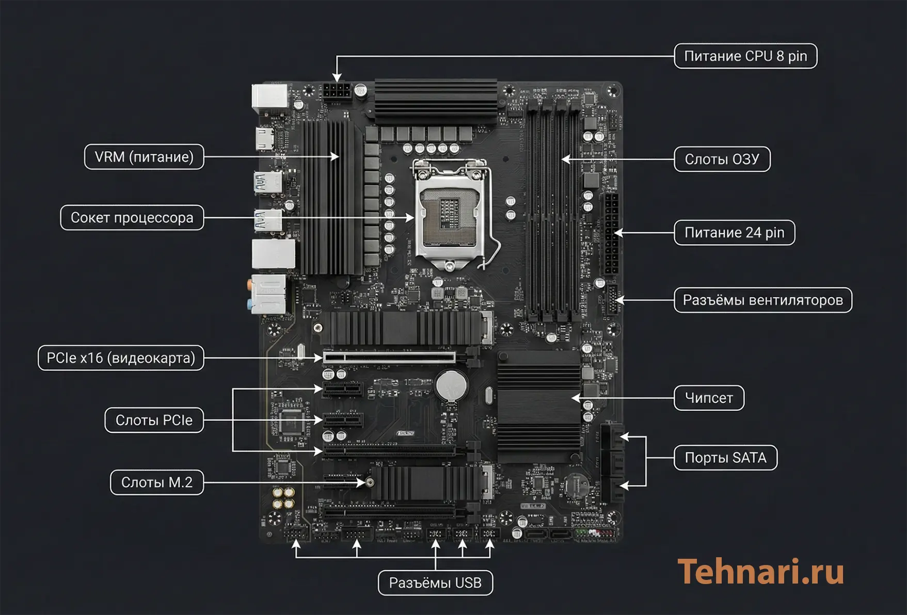

Компьютерное оборудование и периферия
Устройства компьютера, сравнение процессоров и памяти, подбор компьютеров под разные задачи, диагностика и ремонт периферийных устройств. В разделе работ: 20.
Внутренние устройства компьютера
Что делает каждый внутренний компонент и зачем он нужен.
| Устройство | Назначение |
|---|---|
| Материнская плата | Соединяет все устройства и обеспечивает их взаимодействие |
| Процессор (CPU) | Выполняет вычисления и обрабатывает команды |
| Оперативная память (ОЗУ) | Временно хранит данные и программы |
| Жёсткий диск (HDD) | Долговременное хранение файлов и ОС |
| SSD | Быстрое хранение данных и загрузка системы |
| Видеокарта | Обрабатывает графику и выводит изображение |
| Блок питания | Обеспечивает электрической энергией |
| Система охлаждения | Отводит тепло от компонентов |
| Звуковая карта | Обрабатывает звуковые сигналы |
| Сетевая карта | Подключение к сети и интернету |
Внешние устройства компьютера
Назначение основных устройств ввода, вывода и хранения данных.
| Устройство | Назначение |
|---|---|
| Монитор | Вывод текста, графики и видео |
| Клавиатура | Ввод текста, цифр и команд |
| Мышь | Управление указателем и выбор объектов |
| Принтер | Печать документов и изображений |
| Сканер | Перевод бумажных документов в цифровой вид |
| Колонки | Воспроизведение звука |
| Веб-камера | Передача и запись видео |
| Флеш-накопитель | Хранение и перенос файлов |
| Внешний жёсткий диск | Большие объёмы данных и резервное копирование |
Компоненты материнской платы (схема)
Схема размещения основных компонентов на материнской плате.

Устройства учебного компьютера: свойства и возможные поломки
Результат просмотра состава компьютера: каждому устройству сопоставлены свойства, польза и типичная неисправность.
| Устройство | Свойства | Польза | Поломки |
|---|---|---|---|
| Intel Core i5-9500F | 6 ядер, 3.00 GHz | Обработка команд | Перегрев → очистить кулер |
| ОЗУ 4 GB 2400 MHz | Временное хранение | Работа программ | Нехватка → увеличить объём |
| NVIDIA Quadro P620 | 2 GB | Графика | Сбои → драйвер, охлаждение |
| Gigabyte H310M S2H | Чипсет H310 | Связь компонентов | Порты → сервис |
| SSD PLEXTOR 256 GB | NVMe | Быстрая система | Ошибки → проверка, бэкап |
| BIOS AMI F12 | 13.08.2019 | Запуск оборудования | Ошибки → настройки BIOS |
| Realtek GbE | Ethernet Up | Сеть | Нет связи → кабель, драйвер |
Сравнение процессоров Intel, AMD и Apple Silicon
Три семейства процессоров сравниваются по назначению, архитектуре, энергопотреблению и графике.
| Параметр | Intel (Core / Core Ultra) | AMD (Ryzen) | Apple Silicon (M) |
|---|---|---|---|
| Для чего чаще | Универсальные ПК, игры, тяжёлый софт | Игры, стриминг, графика, многозадачность | Экосистема Mac, монтаж, кодинг, автономность |
| Архитектура | Гибридная (мощные + экономичные ядра) | Классическая / разделение в новых чипах | Единая SoC (CPU + GPU + память) |
| Энергопотребление | Часто выше, сильный нагрев | Умеренное, энергоэффективные | Рекордно низкое |
| Встроенная графика | UHD / Iris / Arc (для игр слабая) | Radeon Graphics | Очень мощная |
| Сокет | Часто меняется | Долговечный (AM4 / AM5) | Впаяно, обновить нельзя |
Характеристики оперативной памяти
Основные параметры ОЗУ, на которые смотрят при выборе и замене памяти.
| Характеристика | Описание |
|---|---|
| Назначение | Временное хранение данных для работы ПК |
| Тип памяти | DDR, DDR2, DDR3, DDR4, DDR5 |
| Объём | Количество данных одновременно (ГБ) |
| Скорость | Скорость передачи данных (MT/s) |
| Пропускная способность | Объём данных в секунду |
| Напряжение | DDR4 - 1,2 В; DDR5 - 1,1 В |
| Тайминги | Задержки при операциях с памятью |
| Форм-фактор | DIMM (ПК), SO-DIMM (ноутбуки) |
| ECC | Обнаружение и исправление ошибок |
| Охлаждение | Радиатор для отвода тепла |
| Совместимость | Должна поддерживаться платой и процессором |
Подбор компьютера для студента
Комплектующие и программы подобраны под задачи студента в рамках бюджета.
Бюджет: 280 000 – 320 000 тг.
| Компонент | Характеристики | Цена | Почему |
|---|---|---|---|
| Процессор | Intel Core i3-12100 + кулер | 65–70 тыс. | 4/8 потоков, UHD 730 |
| Плата | H610M / B760M DDR4 | 40–50 тыс. | Недорогая, стабильная |
| ОЗУ | 16 ГБ (2×8) DDR4-3200 | 25–35 тыс. | Многозадачность |
| SSD | 512 ГБ – 1 ТБ NVMe | 30–50 тыс. | Быстрая система |
| БП | 450–500 Вт 80+ Bronze | 15–20 тыс. | С запасом |
| Корпус | Mid/Micro-Tower с фильтрами | 15–25 тыс. | Обдув |
| Монитор | 24" IPS Full HD 75–100 Гц | 50–70 тыс. | Комфорт |
| Клавиатура + мышь | Проводной комплект | 8–15 тыс. | Надёжно |
Итого системник: 190–230 тыс. + периферия
ОС: Windows 11 Home или Ubuntu 24.04. Office / LibreOffice, браузер, Zoom/Teams, Defender + Malwarebytes.
Подбор компьютера для бухгалтера
Сборка для работы с 1С и Excel: упор на оперативную память и стабильность.
Бюджет: 320 000 – 380 000 тг.
| Компонент | Характеристики | Цена | Почему |
|---|---|---|---|
| Процессор | Ryzen 5 5600 / i5-12400 | 60–90 тыс. | 6 ядер - 1С и Excel |
| Плата | B550 / B760 | 45–65 тыс. | Стабильная, много USB |
| ОЗУ | 32 ГБ (2×16) DDR4-3200 | 45–60 тыс. | Критично для 1С |
| SSD | 1 ТБ NVMe | 45–70 тыс. | Быстро + запас |
| БП | 500–550 Вт 80+ Bronze | 18–25 тыс. | Тихий |
| Корпус | С фильтрами | 20–30 тыс. | Меньше пыли |
| Монитор | 27" IPS Full HD / 2K | 70–100 тыс. | Больше места |
| Клавиатура + мышь | Эргономичные | 12–20 тыс. | Комфорт |
| ИБП (опц.) | 600–1000 ВА | 25–40 тыс. | Защита от скачков |
Итого системник: ≈ 220–280 тыс. + периферия
ОС: Windows 11 Pro. 1С, Office, Adobe Reader / Foxit, 7-Zip, Kaspersky или Defender.
Подбор компьютера для веб-разработчика
Сборка для веб-разработки: многопоточный процессор, много ОЗУ и быстрый SSD.
Бюджет: 420 000 – 520 000 тг.
| Компонент | Характеристики | Цена | Почему |
|---|---|---|---|
| Процессор | Ryzen 5 5600/7600 или i5-12400F/13400 | 60–110 тыс. | Многопоточность, Docker |
| Плата | B550 / B650 / B760 | 55–80 тыс. | Быстрая память, M.2 |
| ОЗУ | 32 ГБ DDR4/DDR5 | 50–80 тыс. | Docker + IDE |
| SSD | 1 ТБ NVMe PCIe 4.0 | 50–80 тыс. | Быстрые сборки |
| Видеокарта | Встроенная или RTX 3050 / RX 6600 | 0 / 120–180 тыс. | Дизайн / 3D |
| БП | 550–650 Вт Bronze/Gold | 25–40 тыс. | Запас |
| Корпус | Mesh-перед | 25–40 тыс. | Охлаждение |
| Монитор | 27" 1440p или 2×24" | 90–140 тыс. | Продуктивность |
| Клавиатура + мышь | Механика + хорошая мышь | 20–40 тыс. | Комфорт |
Итого системник: ≈ 280–380 тыс. + периферия
ОС и ПО: Windows 11 Pro + WSL2 или Ubuntu. VS Code / WebStorm, Node.js, Git, Docker, Chrome/Firefox/Edge, Postman, Figma.
Диагностика накопителя
Двенадцать шагов проверки накопителя: от осмотра до вывода «исправен, наблюдать или заменить».
- Осмотреть на повреждения.
- Проверить подключение.
- Убедиться, что система определяет накопитель.
- Проверить объём и свободное место.
- Проверить состояние в CrystalDiskInfo.
- Посмотреть показатели S.M.A.R.T.
- Проверить диск средствами Windows.
- При необходимости проверить файловую систему.
- Проверить скорость чтения/записи.
- Посмотреть журнал ошибок системы.
- Сохранить важные данные на другой носитель.
- Сделать вывод: исправен / требует наблюдения / заменить.
Диагностика клавиатуры и мыши
Проверка идёт от простого (кабель, порт) к сложному (драйверы, замена).
- Проверить внешний вид и отсутствие повреждений.
- Проверить подключение кабеля или USB-приёмника.
- Для беспроводных - заряд батареи и питание.
- Переподключить или подключить к другому порту.
- Перезагрузить компьютер.
- Проверить на другом компьютере.
- Проверить Диспетчер устройств на ошибки драйвера.
- Обновить или переустановить драйвер.
- Проверить все клавиши / кнопки / колёсико.
- Определить причину неисправности.
- При аппаратной поломке - ремонт или замена.
- Повторно проверить работу.
Проверка клавиатуры и мыши: результаты
Результат проверки: все клавиши и кнопки работают исправно.
| Устройство | Проверка | Результат |
|---|---|---|
| Клавиатура | Все клавиши по очереди | Работают |
| Клавиатура | Одновременное нажатие 3–4 клавиш | Работают |
| NumPad | Цифровой блок | Работает |
| Мышь | 30 нажатий левой кнопки | Работает |
| Мышь | Правая и средняя кнопки | Работают |
| Мышь | Колёсико | Работает |
| Мышь | Двойные клики | Ложных нет |
Настройка принтера или монитора
Как подключить и настроить принтер или монитор в Windows.
- Подключить устройство и включить.
- Проверить кабели и питание.
- Дождаться обнаружения системой.
- Принтер: Параметры → Bluetooth и устройства → Принтеры и сканеры. Монитор: Параметры → Система → Дисплей.
- Если не найден - «Добавить устройство» / «Обнаружить».
- Установить или обновить драйвер.
- Настроить параметры печати / разрешение и масштаб.
- Проверить работу (пробная страница / изображение).
Регулярное обслуживание компьютера
Список регулярных действий, которые продлевают срок службы компьютера.
- Очистка корпуса от пыли.
- Очистка внутренних компонентов (после отключения питания).
- Проверка системы охлаждения.
- Проверка кабелей и разъёмов.
- Проверка накопителя на ошибки.
- Диагностика оперативной памяти.
- Обновление операционной системы.
- Обновление антивируса и проверка ПК.
- Удаление ненужных файлов.
- Проверка автозагрузки.
- Резервное копирование важных файлов.
- Проверка периферийных устройств.
Алгоритм устранения неисправности периферии
Универсальный порядок поиска и устранения неисправности периферийного устройства.
- Определить неисправное устройство.
- Проверить питание.
- Проверить подключение.
- Переподключить устройство.
- Проверить другой порт.
- Перезагрузить компьютер.
- Проверить настройки системы.
- Проверить и обновить драйверы.
- Проверить на другом компьютере.
- Подвести итог: подключение / настройки / драйверы / само устройство.
Типовые неисправности монитора
Десять неисправностей монитора с признаками и вероятными причинами.
| Неисправность | Признаки | Возможные причины |
|---|---|---|
| Не включается | Индикатор не горит | Нет питания, повреждён кабель/БП |
| Нет изображения | Чёрный экран | Неверный вход, кабель, проблема с ПК |
| Мерцание | Изображение мигает | Видеодрайвер, кабель, частота обновления |
| Размытое изображение | Нечёткий текст | Неверное разрешение, плохой контакт |
| Полосы на экране | Линии | Кабель, матрица, электроника |
| Искажение цветов | Неправильные цвета | Кабель, контакт, матрица |
| Тёмный экран | Плохо видно | Низкая яркость, подсветка |
| Битые пиксели | Точки одного цвета | Повреждение матрицы |
| Отключается | Экран гаснет | Питание, кабель, внутренние компоненты |
| «Нет сигнала» | No Signal | Нет видеосигнала, неверный вход |
Неисправности микрофона, колонок и гарнитуры
Типовые неисправности звуковых устройств и общие причины их появления.
Микрофон: не работает, тихий звук, шумы, искажение, прерывистый звук, не обнаруживается, эхо, не работает в приложении.
Колонки: не включаются, нет звука, тихий звук, хрип/треск, одна колонка, пропадание звука, гул, не обнаруживаются.
Гарнитура: нет звука, не работает микрофон, тихий звук, хрип, прерывание, эхо, не обнаруживается, быстро разряжается, не работают кнопки.
Основные причины: подключение, настройки, драйверы, повреждение кабеля, батарея, помехи.
Неисправности веб-камеры
Неисправности веб-камеры, их признаки и способы устранения.
| Неисправность | Признаки | Устранение |
|---|---|---|
| Не включается | Индикатор не горит | Питание, кабель, USB-порт |
| Не обнаруживается | Нет в списке устройств | Переподключить, драйвер, другой порт |
| Чёрный экран | Нет изображения | Объектив, настройки, подключение |
| Размытое изображение | Нечёткая картинка | Очистить объектив, настроить фокус |
| Плохое качество | Тёмная/зернистая | Освещение, настройки |
| Не работает в приложении | Нет видео | Разрешить доступ, выбрать устройство |
| Занята другим приложением | Сообщение об использовании | Закрыть другие программы |
| Ошибка драйвера | Не запускается | Обновить / переустановить драйвер |
| Нет доступа | Нет разрешения | Включить доступ в конфиденциальности Windows |
Комплексный алгоритм ремонта периферии
Шесть этапов ремонта: от первичного осмотра до записи результата.
| Этап | Действия |
|---|---|
| Первичный осмотр | Корпус, кабели, разъёмы, питание |
| Диагностика | Подключение, настройки, драйверы |
| Выявление причины | Переподключение, другой порт/ПК |
| Устранение | Настройки, драйвер, замена кабеля |
| Проверка работы | Основные функции устройства |
| Контроль | Убедиться в исправности, записать результат |
Ремонт сетевого кабеля
Порядок проверки и ремонта сетевого кабеля от простого к сложному.
- Проверить плотность подключения в ПК и роутере, переткнуть в другой разъём.
- Осмотреть кабель на перегибы, порезы, сломанную защёлку.
- Сломанный штекер - обрезать и обжать новый (или вызвать мастера).
- Кабель перебит посередине - лучше заменить целиком или соединить переходником RJ-45.
- Убедиться, что загорелись индикаторы и интернет заработал.